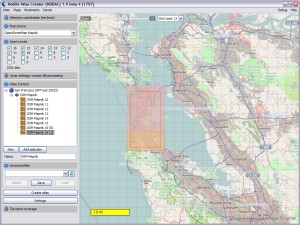

Screenshots
San Francisco OpenStreetMap & Google Maps
 Atlases can contain multiple layers that differ regarding the map source (OpenStreetMap, Google Maps, ...) and zoom level.If a map extends the maximum map size TrekBuddy Atlas Creator automatically fragments the selected area into smaller map parts. The example shows such an area that has been fragmented into 16 smaller map parts.